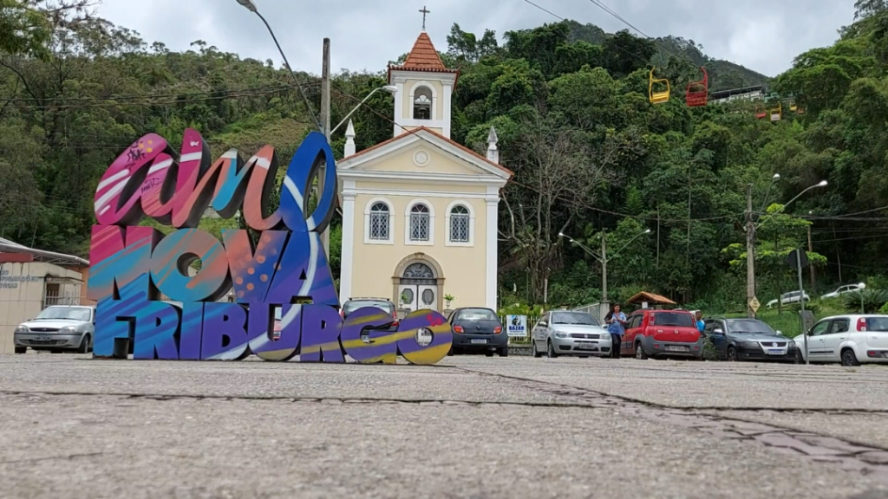

Bem-vindos a Nova-Friburgo!
Localizada na região serrana do estado do Rio de Janeiro, Nova Friburgo é um destino que encanta pela beleza de suas montanhas, clima agradável, rica história e forte influência cultural europeia. Conhecida como a "Suíça Brasileira", a cidade combina tradição, natureza e desenvolvimento, oferecendo qualidade de vida aos moradores e experiências inesquecíveis aos visitantes.
Fundada em 1818, Nova Friburgo preserva um importante patrimônio histórico e cultural, refletido em sua arquitetura, gastronomia e costumes. Cercada por paisagens exuberantes, a cidade abriga cachoeiras, trilhas, parques e áreas de preservação ambiental que atraem amantes do ecoturismo e dos esportes de aventura durante todo o ano.
Além de seu potencial turístico, Nova Friburgo destaca-se como um importante polo econômico da região, com forte atuação nos setores de comércio , indústria, educação e moda íntima, reconhecida nacionalmente pela qualidade de sua produção.
Este portal foi criado para reunir a gastronomia, os pontos turísticos, contatos importantes e eventos da cidade, aproximando moradores, turistas e investidores de tudo o que Nova Friburgo tem a oferecer.
Descubra as belezas, a cultura e as oportunidades de Nova Friburgo. Uma cidade acolhedora, cercada pela natureza e repleta de histórias para contar.
